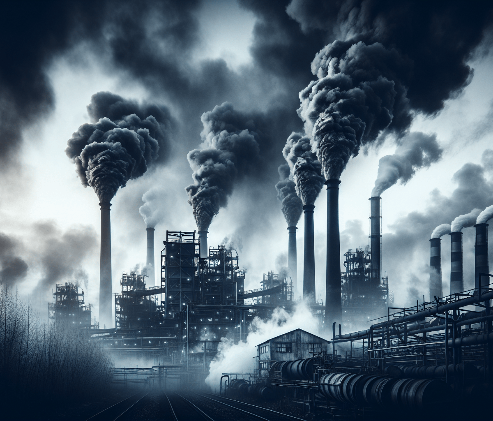

<link rel="stylesheet" href="estilo.css">
<header class="header">
    <div class="menu container">
      <label for="menu">
        
      </label>
      <nav class="navbar">
        <ul>
          <li><a href="#Introduccion" class="selected">Introducción</a></li>
          <li><a href="#Contaminacion">Contaminación</a>
            
          </li>
          <li><a href="#Tipos de contaminacion">Tipos de contaminación</a>
            <ul>
              <li><a href="CTMNC.Agua.html">Agua</a></li>
              <li><a href="CTMNC.Aire.html">Pagina principal</a></li>
              <li><a href="CTMNC.Suelo.html">Suelo</a></li>
              <li><a href="Economia circular.html">Economía circular</a></li>
              <li><a href="Gestion.html">Gestión de Residuos</a></li>
              <li><a href="RSDS.biomedicos.html">Residuos biomedicos</a></li>
              <li><a href="RSDS.electronicos.html">Residuos electrónicos</a></li>
            </ul></li>
        </ul>
      </nav>
    </div>
    
    <h1>Contaminacion del Aire</h1>
<p>
    La contaminación del aire es uno de los problemas ambientales más graves, ya que afecta tanto la salud humana como el clima y los ecosistemas. Se produce cuando sustancias nocivas, como gases, partículas y compuestos químicos, se emiten a la atmósfera, degradando su calidad y haciendo que sea peligrosa para el ser humano y la vida en general.
</p>
<h2>Principales causas de la contaminación del aire</h2>
<p>
1. Emisiones de vehículos: Los automóviles, camiones y otros vehículos motorizados emiten grandes cantidades de gases como dióxido de carbono (CO₂), óxidos de nitrógeno (NOx) y partículas, que contribuyen significativamente a la contaminación urbana.
</p>
2. Industria y fabricación: Las fábricas y plantas industriales liberan gases contaminantes como dióxido de azufre (SO₂), monóxido de carbono (CO) y compuestos orgánicos volátiles (COV), que afectan tanto la atmósfera como la salud de las personas cercanas.
<p>
3. Quema de combustibles fósiles: La generación de electricidad y calefacción mediante carbón, petróleo y gas natural es una de las principales fuentes de contaminación atmosférica.
</p>
4. Agricultura: La ganadería produce metano (CH₄), un gas de efecto invernadero, mientras que el uso de fertilizantes emite óxidos de nitrógeno que contribuyen a la contaminación.
<p>
5. Quema de basura y deforestación: Estas prácticas liberan partículas y gases peligrosos, que afectan la calidad del aire y contribuyen al cambio climático.
<p>
    Efectos de la contaminación del aire
    <p>

Impacto en la salud humana: La exposición a contaminantes puede causar enfermedades respiratorias (como asma y bronquitis), cardiovasculares y cáncer de pulmón. La Organización Mundial de la Salud (OMS) estima que millones de personas mueren anualmente por causas relacionadas con la contaminación del aire.

Cambio climático: Algunos contaminantes, como el dióxido de carbono y el metano, son gases de efecto invernadero que contribuyen al calentamiento global y afectan los patrones climáticos.

Daños en los ecosistemas: La lluvia ácida, formada por contaminantes como el dióxido de azufre, daña bosques, cuerpos de agua y suelos, afectando gravemente la biodiversidad.

Reducción de la visibilidad: En áreas muy contaminadas, como algunas grandes ciudades, la niebla tóxica o “smog” reduce la visibilidad y crea condiciones peligrosas para el tráfico.
</p>

Soluciones y medidas de prevención
<p>
1. Transporte sostenible: Fomentar el uso de transporte público, bicicletas y vehículos eléctricos reduce la emisión de gases contaminantes.
</p>
2. Energías limpias: Promover el uso de energías renovables como la solar, eólica e hidroeléctrica disminuye la dependencia de los combustibles fósiles.
<p>
3. Regulación de emisiones: Implementar leyes y normas para reducir las emisiones industriales y vehiculares, y regular el uso de ciertos químicos.
</p>
4. Reforestación: Plantar árboles y proteger áreas verdes ayuda a purificar el aire, ya que los árboles absorben CO₂ y otros contaminantes.
<p>
5. Educación y concienciación: Informar a la población sobre el impacto de sus acciones en la calidad del aire y promover prácticas sostenibles en el hogar y en el trabajo.
</p>
La contaminación del aire es una amenaza global, pero con la acción coordinada de gobiernos, empresas y ciudadanos, es posible reducir sus efectos y 
proteger la salud y el medio ambiente para las futuras generaciones.
<P>
    
</p>
